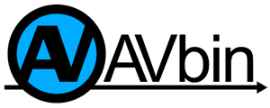

Developer Information

The Git repository for AVbin is hosted at: http://github.com/AVbin/AVbin
You can get your own copy of the repository by running the following command:
git clone git://github.com/AVbin/AVbin.git
Project Description
AVbin is a thin cross-platform wrapper around Libav’s (formerly FFmpeg’s) video and audio decoding library, providing long-term binary compatibility for applications and languages that need it. All of Libav’s basic decoding symbols are available in the library, so if you just need to decode, you can also view AVbin as a binary shared library release of Libav.
AVbin was created for Pyglet as its media decoding/decompression library, though we hope others find AVbin useful as well.
More Details
Libav is a collection of audio and video codecs widely used in projects such as mplayer, xine, gstreamer and VLC. It is under continuous development; so much so that its developers rarely provide a release, and snapshots of the library must be statically linked to avoid version incompatibilities.
AVbin allows programs that require dynamic linkage to use Libav. It does this by providing
an accurate version number within the shared library, allowing applications to select the appropriate data structures and functions to use at runtime, and a simplified interface with an unchanging ABI to the most common decoding functionality within Libav.
AVbin is distributed as a single dynamic library (.so on Linux, .dylib on Mac OS X, and .dll on Windows) that depends on no other files or installations. This eliminates the many complexities of building Libav on platforms other than Linux; however you can still build it from source if you prefer.
AVbin releases focus on providing the dynamic library for all supported platforms. Current supported platforms are 32-bit and 64-bit versions of OS X, Linux, and Windows. For version 8 and newer, only x86-based architectures are supported (PowerPC support has been dropped).
Get Started Coding
You can use AVbin in one of two ways. Linking against the avbin shared library provides all libavcodec, libavutil and libavformat functions. You can use the avbin_get_info() function (in version 10 or newer) to determine the exact git repository commit of Libav that has been linked, and use the appropriate data structures and functions.
Because the Libav interface changes quite quickly, AVbin also provides a simpler interface that is guaranteed to be backward and forward compatible with future releases. The source release contains a header file named avbin.h for this interface in the include directory.
Credits
The current AVBIN maintainer is Nathan Stocks. See the README file or the repository commit history for a list of other contributors. AVbin was originally created by Alex Holkner.
Developer Information
